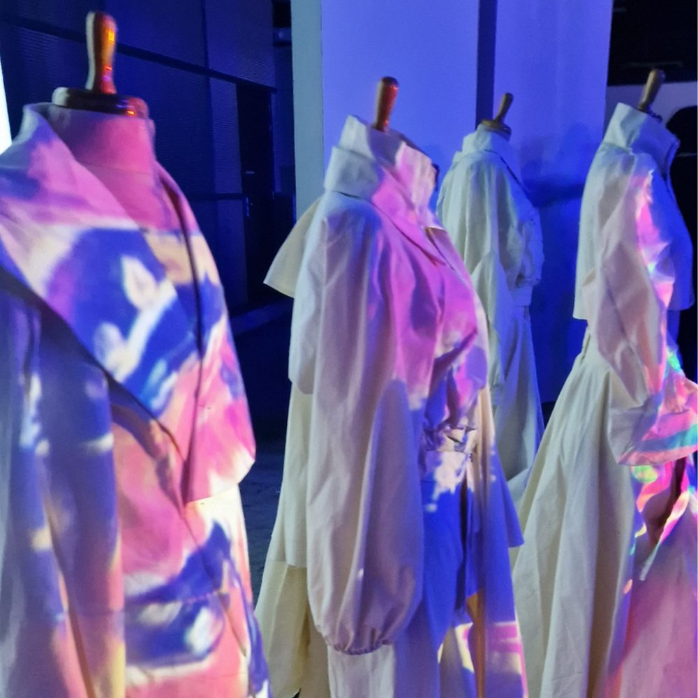
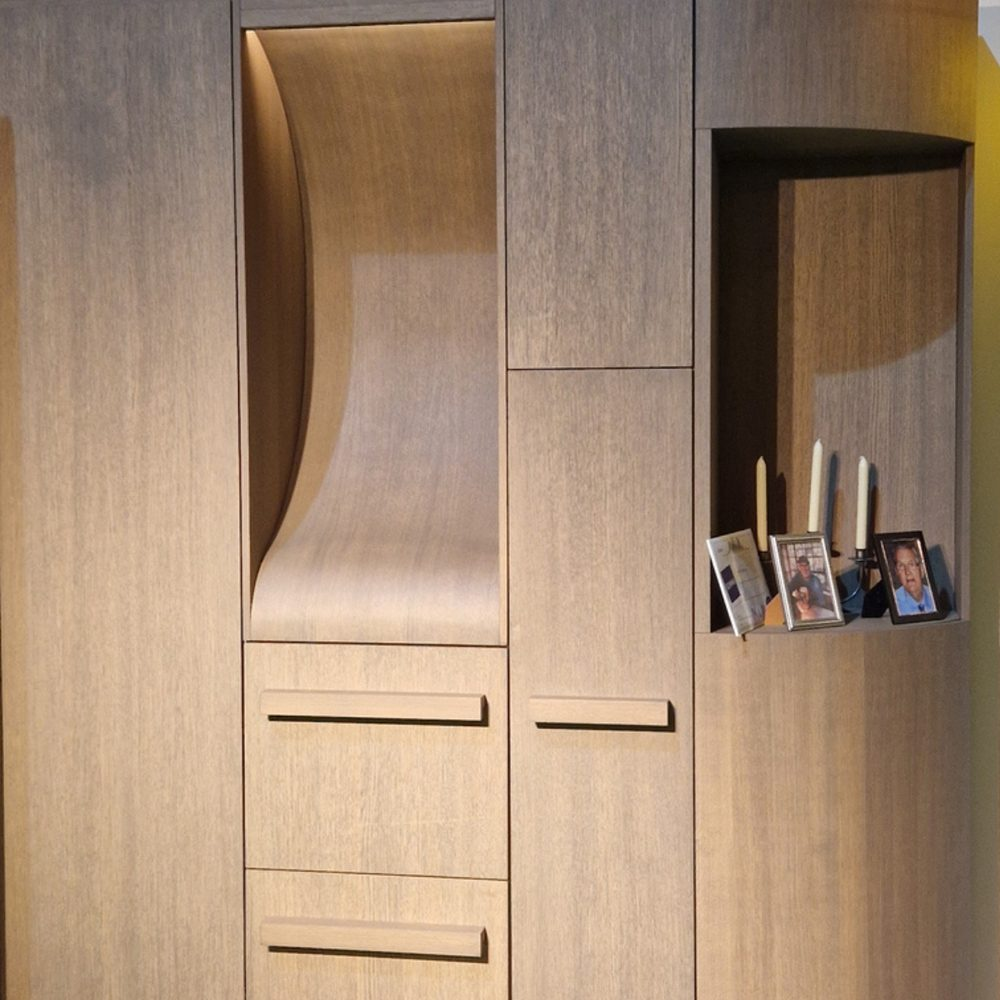
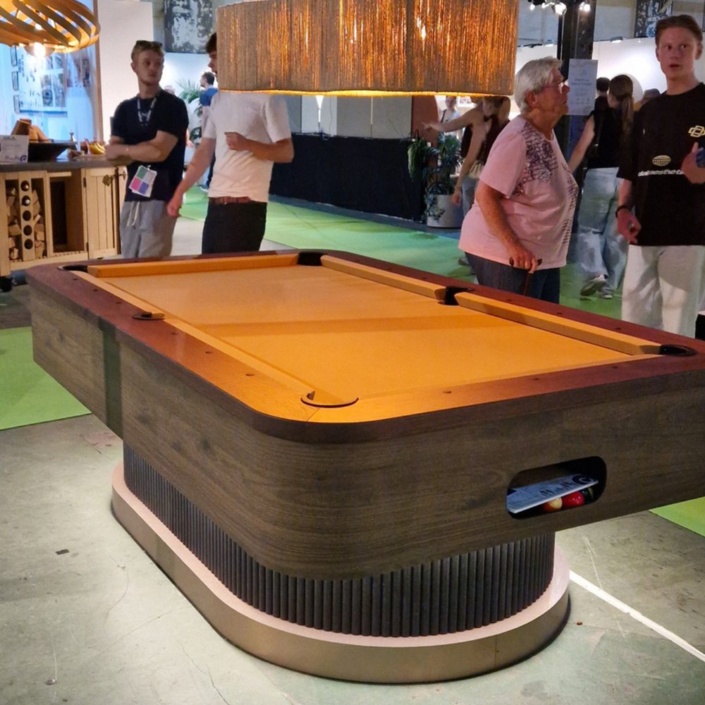
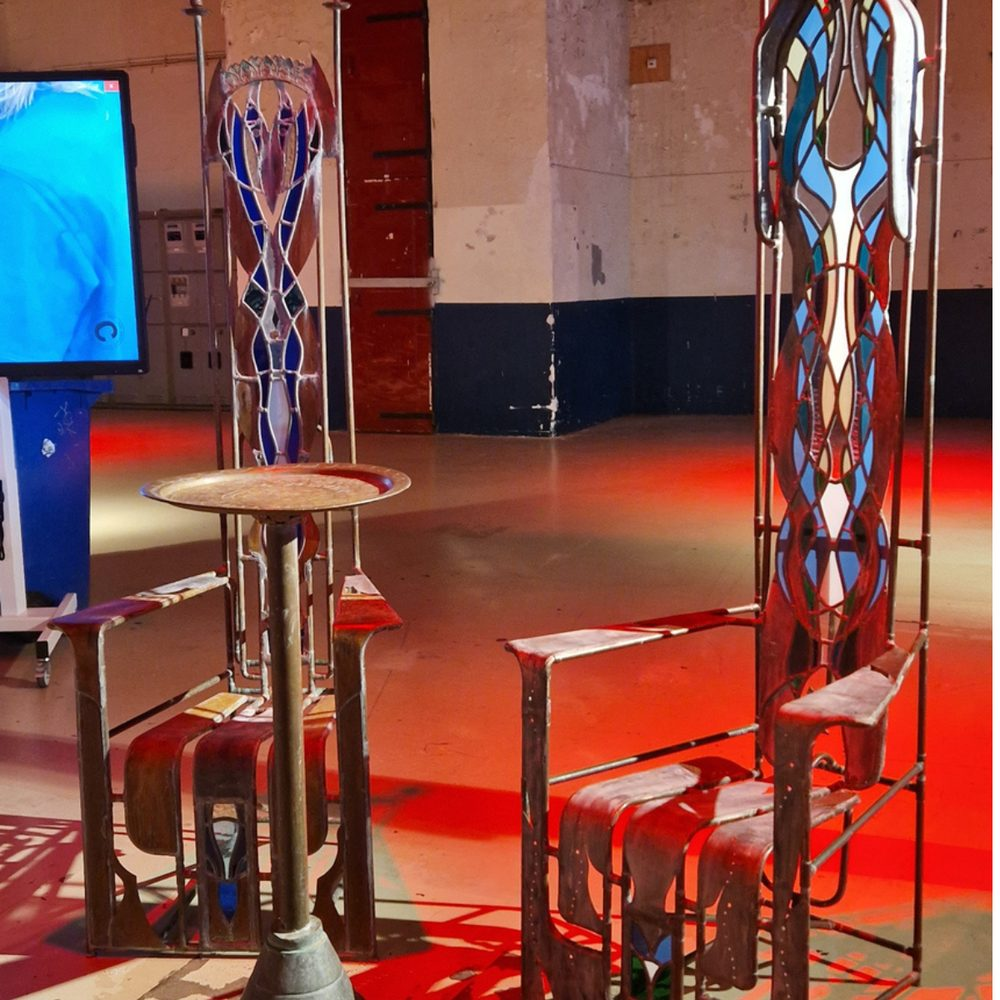
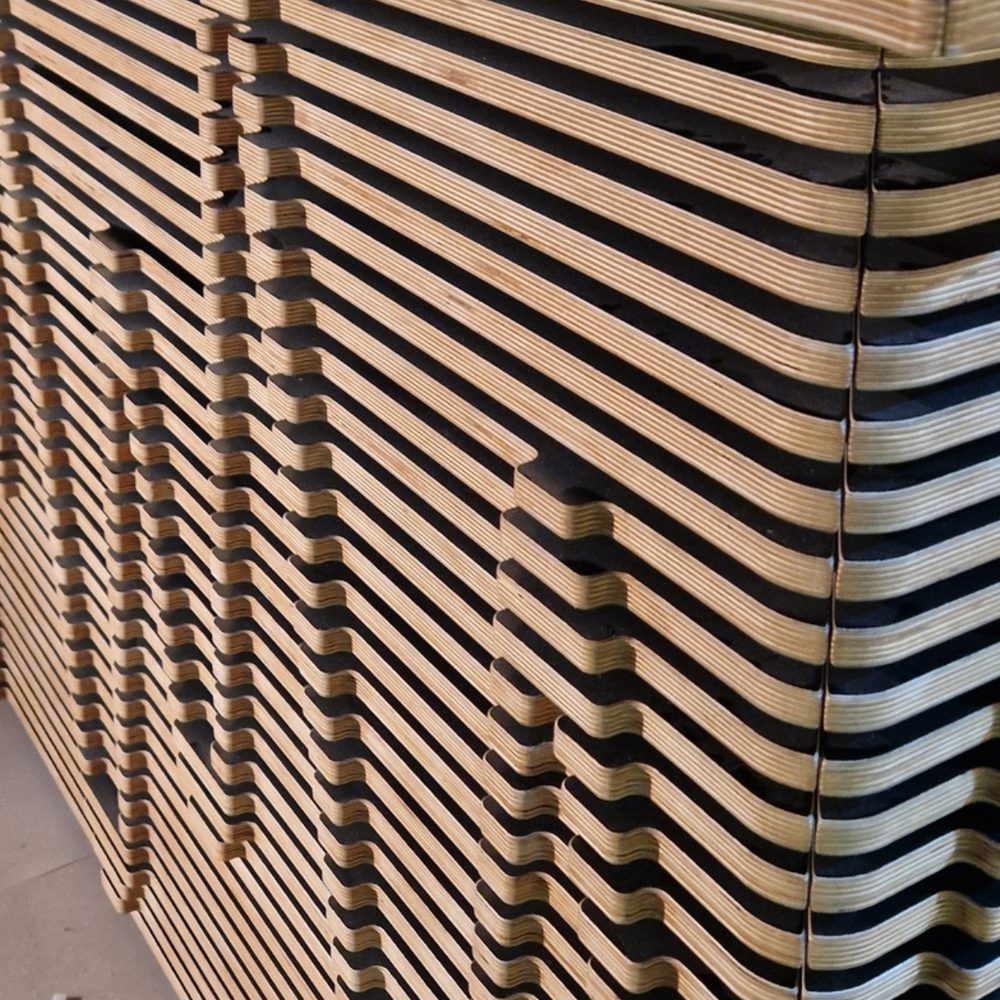
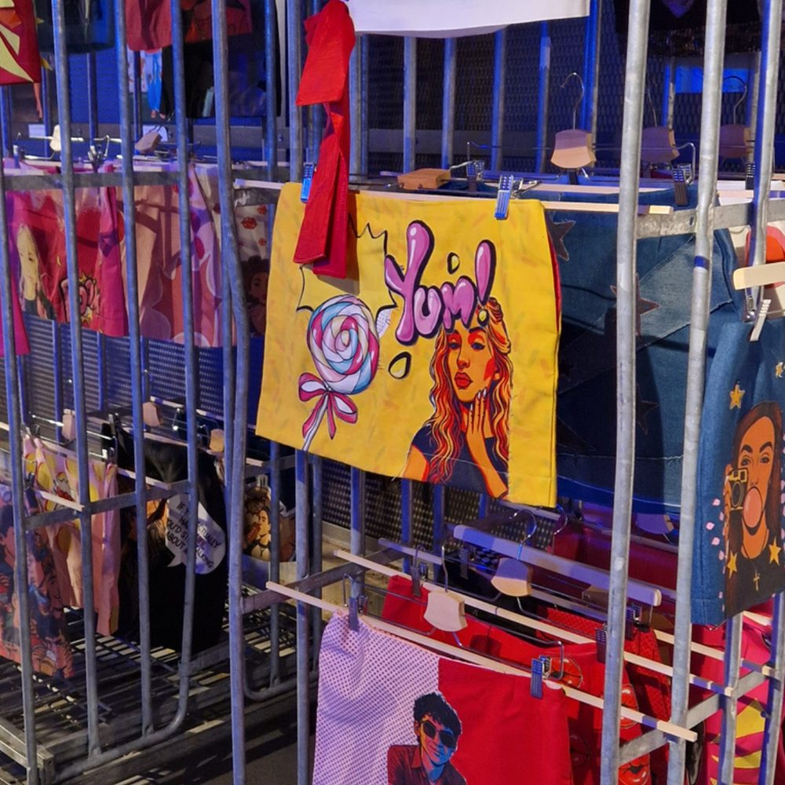
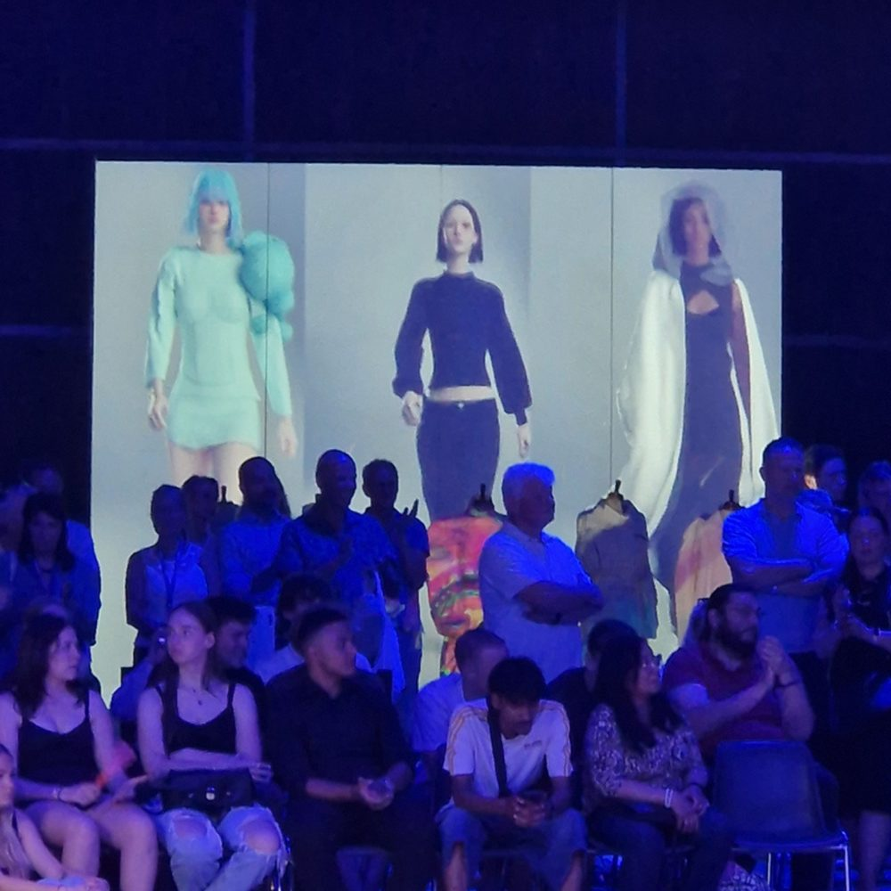

Jureren op Crafted
Afgelopen week mocht ik jureren op Crafted, in het Klokgebouw in Eindhoven. En niet vanaf de zijlijn, maar als voorzitter van de jury. Spannend.

Een dag lang dwalen tussen het eindexamenwerk van mbo-studenten van het Summa College: Summa Techniek, Summa Fashion en Summa Wonen & Design. De eindwerken zagen er fantastisch uit, maar de verhalen waren eigenlijk nog beter.
Roos van de Heuvel maakte van een boom uit de tuin van haar ouders, die ziek was, een kast. Jaren keken zij vanuit huis naar die boom, en nu kijkt de boom vanuit de woonkamer naar de familie.
Lise Hendriks ontwierp voor een woongroep een gezamenlijke ruimte. Ze zette haar eigen neurodiversiteit in om alles te testen: of het niet te overprikkelend was, of dat het juist wat meer prikkeling kon gebruiken. En zo waren er nog veel meer mooie verhalen.
Mooi om te zien hoeveel talent er rondloopt. Wat doen de docenten op het Summa dit goed.
En alle andere studenten die ik nu niet noem, ook zij die niet genomineerd waren, waren net zo fantastisch. Complimenten voor iedereen die zijn werk liet zien.





